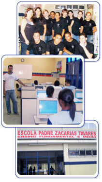

Este é o blog do JEPPE – Jovem Empreendedor de Pernambuco

O Programa Jovem Empreendedor de Pernambuco promoverá a qualificação profissional e a capacidade empreendedora dos jovens, com ênfase nos alunos do ensino médio das escolas públicas de Pernambuco, utilizando-se das tecnologias de Ensino a Distancia (EAD) – aplicadas via Internet.
Objetivos
Qualificar, de forma complementar em informática, internet e empreendedorismo alunos concluintes do ensino médio das escolas públicas.
Estimular e fortalecer o papel das escolas públicas como centros de formação, contribuindo para aproximar a educação formal ao mercado de trabalho.
Público alvo
Inicialmente serão beneficiados pelas ações do Projeto 5.000 (cinco mil) alunos do terceiro ano do ensino médio das escolas públicas estaduais pernambucanas.
Localidades
Numa primeira etapa, o projeto será executado nas seguintes localidades:
Abreu e Lima
Afogados da Ingazeira
Águas Belas
Aliança
Altinho
Araçoiaba
Araripina
Arcoverde
Barreiros
Belém do São Francisco
Betânia
Bezerros
Bom Conselho
Bonito
Brejão
Buíque
Cabo de Santo Agostinho
Cachoeirinha
Camaragibe
Capoeiras
Carnaiba
Carpina
Caruaru
Escada
Exu
Floresta
Garanhuns
Glória do Goitá
Gravatá
Iati
Ibimirim
Igarassú
Iguaraci
Inajá
Ipojuca
Itaíba
Jaboatão dos Guararapes
Jurema
Lajedo
Limoeiro
Manari
Mirandiba
Moreno
Olinda
Orobó
Ouricuri
Palmares
Parnamirim
Paudalho
Pedra
Pesqueira
Petrolandia
Petrolina
Recife
Salgueiro
Sanharó
Santa Cruz
Santa Cruz da Baixa Verde
São José da Coroa Grande
São José do Belmonte
São Vicente Férrer
Serra Talhada
Sirinhaém
Surubim
Tabira
Tacaimbó
Tacaratu
Taquaritinga do Norte
Terezinha
Trindade
Triunfo
Tupanatinga
Venturosa
Vitória de Santo Antão